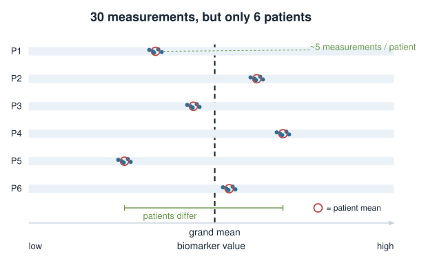
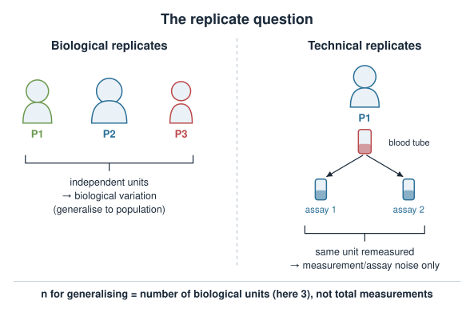
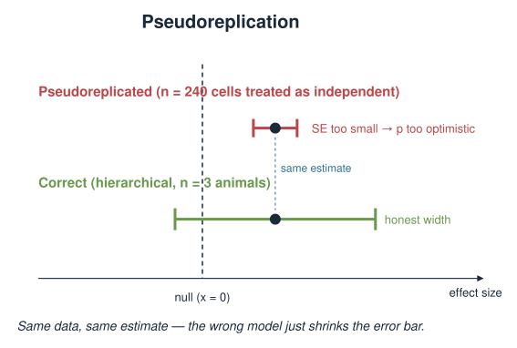
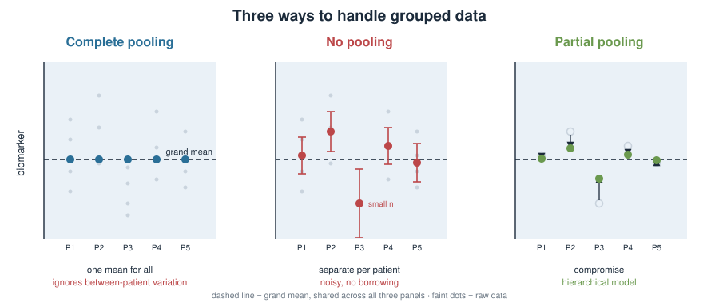
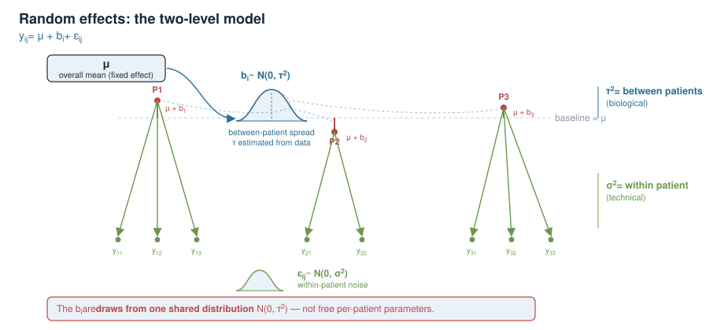
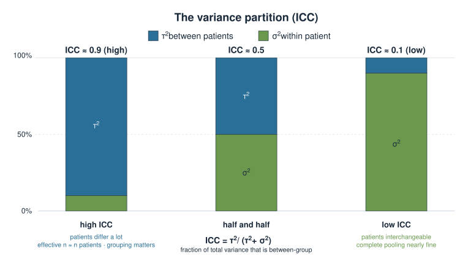
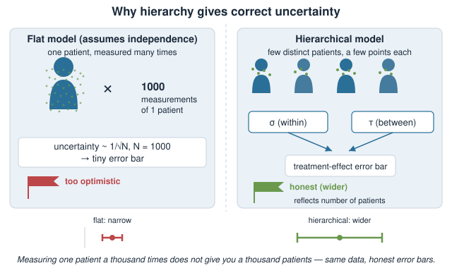
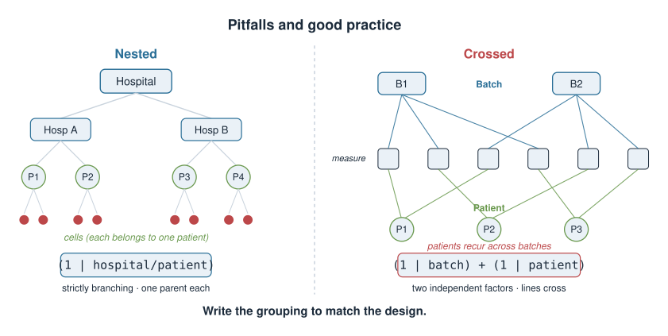

Your data almost never arrive as one flat list of independent numbers. They come grouped: several cells per animal, several reads per cell, several time points per patient. Today we learn to model that structure instead of pretending it isn’t there.
Biological vs technical replicates — and why confusing them (pseudoreplication) is one of the most common mistakes in the literature.
Three ways to handle grouped data: pool everything, pool nothing, or the middle road — partial pooling.
Shrinkage: group estimates are pulled toward the overall mean, more so when a group is small or noisy.
Random effects and the two-level model equation; the same idea in lme4 and Bayesian brms/Stan syntax.
Why hierarchy gives you the right uncertainty, not just the right average.
Provisional block
This whole Bayesian statistics block is provisional and may move to a later statistics / machine-learning course. Treat it as a conceptual bridge, not exam-critical material.
A biology picture first
You measure a blood biomarker to compare treated vs control patients. But you don’t get one number per patient — you draw several samples per patient, and each sample is assayed.
6 patients, roughly 5 measurements each → about 30 numbers.
The 5 measurements from one patient are more similar to each other than to another patient’s: same physiology, same day, same tube.
How many independent data points do you really have — 30, or 6?
The honest answer is somewhere between, and today’s model is exactly what puts a number on “somewhere between”.

The replicate question
Before any statistics, ask of every number: what is being repeated?
Biological replicate — an independent biological unit: a different patient, animal, or independently grown culture. Captures biological variation between units.
Technical replicate — the same biological unit measured again: the same blood sample split and assayed twice, the same library sequenced twice. Captures measurement / assay noise only.
Averaging two technical replicates makes your measurement of one unit more precise. It does not give you a second unit.
Note
The number that limits your ability to generalise to new patients is the number of biological replicates, not the total count of measurements.

Pseudoreplication
Pseudoreplication = analysing technical replicates (or repeated measures within a unit) as if they were independent biological replicates.
Consequences:
The effective sample size is overstated (you claim 30 when you have nearer 6).
Standard errors come out too small, confidence intervals too narrow.
p-values are too optimistic → inflated false-positive rate.
A classic tell in a paper: “n = 240 cells from 3 animals, p < 0.001.” The relevant n for a between-animal claim is 3.

Three ways to handle grouped data
Say each patient \(i\) has a true mean \(\mu_i\) and you want to describe them.
Complete pooling — ignore patients; one grand mean \(\mu\) for everyone. Throws away real between-patient variation.
No pooling — a separate, independent mean for each patient, estimated from that patient’s data alone. Noisy for patients with few measurements; can’t borrow strength.
Partial pooling — each \(\hat\mu_i\) is a compromise between the patient’s own mean and the grand mean. The hierarchical model.
Partial pooling is the “have your cake and eat it”: patient-specific, but stabilised by the group.

Partial pooling and shrinkage
The partial-pooling estimate for a group is a precision-weighted average of its own mean and the grand mean:
\(b_i\) — how patient \(i\) deviates from it (a random effect), drawn from a shared distribution.
\(\varepsilon_{ij}\) — measurement noise within a patient.
The move that makes it hierarchical: the \(b_i\) are not free parameters — they share a distribution \(\mathcal N(0,\tau^2)\) whose spread \(\tau\) is estimated from the data.

The variance partition (ICC)
The two variances answer “how correlated are two measurements from the same patient?”
ICC near 1 — patients differ a lot, measurements within a patient are tight. Grouping matters enormously; your effective sample size is close to the number of patients.
ICC near 0 — patients are basically interchangeable; grouping barely matters and complete pooling is nearly fine.
The intraclass correlation is the single number that tells you how much your hierarchy matters.

Why hierarchy gives correct uncertainty
A flat model that ignores grouping assumes all \(N\) measurements are independent, so its uncertainty scales like \(1/\sqrt{N}\) — too optimistic when measurements cluster.
The hierarchical model instead:
separates within-patient noise (\(\sigma\)) from between-patient variation (\(\tau\)),
propagates both into the uncertainty of the group means and of \(\mu\),
so the confidence interval on the treatment effect reflects the number of patients, not the raw count of measurements.
Same data, honest error bars. You are no longer fooled by measuring one patient a thousand times.

In R: the model formula
The grouping is written with (1 | patient) — read it as “let the intercept vary by patient.”
Frequentist multilevel fit with lme4:
library(lme4)# random intercept per patient, plus a treatment fixed effectfit <-lmer(biomarker ~ treatment + (1| patient), data = d)summary(fit) # fixed effects + variance of the random intercept (tau^2) and residual (sigma^2)ranef(fit) # the shrunken per-patient deviations b_i
treatment — a fixed effect (the population-level question).
(1 | patient) — a random intercept: one \(b_i\) per patient, from a shared \(\mathcal N(0,\tau^2)\).
The Bayesian version: brms / Stan
The same formula, now fully Bayesian — priors on every parameter, a posterior for each:
library(brms)fit <-brm(biomarker ~ treatment + (1| patient),data = d,family =gaussian()) # brms writes and runs the Stan model for yousummary(fit) # posterior means + credible intervals
The hierarchy is Bayesian at heart: the line \(b_i \sim \mathcal N(0,\tau^2)\)is a prior on the patient effects — an adaptive prior whose width \(\tau\) is itself estimated (given its own hyperprior).
Reading it off correctly
Whichever engine you use, the workflow is the same:
Report the fixed effect (e.g. treatment difference) with its interval — this is your scientific answer.
Report the variance components: \(\hat\tau\) (between patients) and \(\hat\sigma\) (within patients); their ratio gives the ICC.
Use the shrunken per-group estimates (ranef / posterior) when you need patient-level values, never the raw per-patient means.
A one-line sanity check: if \(\hat\tau \approx 0\) the data say patients are alike (near complete pooling); if \(\hat\tau \gg \hat\sigma\) grouping dominates.
Pitfalls and good practice
Too few groups. You cannot estimate \(\tau\) from 2–3 patients; the between-group variance is barely identified. Rule of thumb: aim for more groups, not just more measurements per group.
Crossed vs nested grouping. Cells within patients within hospitals nest; but batch and patient may cross. Write the grouping to match the design.
Don’t model the treatment as random if it’s the effect you care about and has few, deliberately chosen levels — that’s a fixed effect.
Balance isn’t required. Unequal \(n_i\) is fine and handled automatically — that’s a strength over averaging.

Summary
Concept
Key fact
Biological replicate
independent unit; sets your power to generalise
Technical replicate
same unit remeasured; reduces measurement noise only
Pseudoreplication
counting technical reps as biological → false confidence
Complete / no / partial pooling
ignore groups / separate per group / compromise
Shrinkage
group estimates pulled toward the grand mean, most for small groups
Random effect
\(b_i \sim \mathcal N(0,\tau^2)\); a group deviation from a shared pool